Theatre series — comparison
Finished index · Review · QML notes
Run finished workbenchRun preserved original
Original worker HTML is a baseline, not approved native output. Both versions retain disclosed project artwork stand-ins. Full screenshots and metadata are linked below. Different-state comparisons explicitly name the tested transition.
23 season options; Go to final episode; keyboard/context Play and Download; notification toggle; library/removal; Collections.
412×900 portrait
Original worker HTML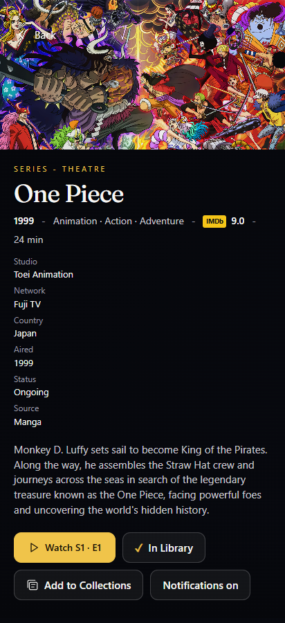
412×900 · 2026-10-31T22:48:24.969Z · SHA-256 7a790c9952476e4838f4219136d0e4628b0eb9a8aafe091e9b6104be9bbe8bc4
Capture metadata
series-original-portraitFinished HTML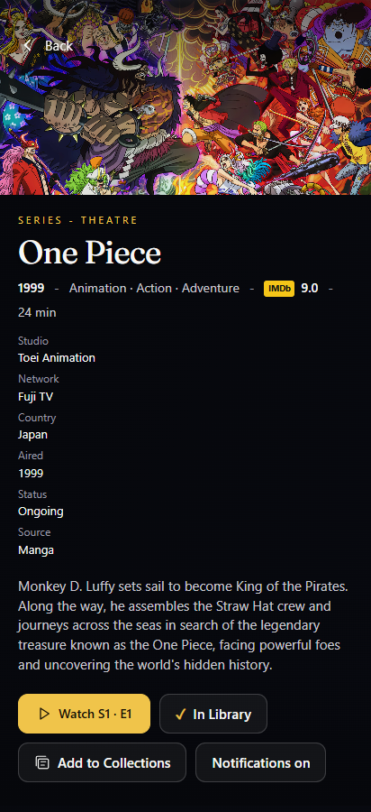
412×900 · 2026-10-31T23:54:54.349Z · SHA-256 251a2c1a13edc7116cdddf8e1e4bf1063b87ba4fc09eabeb3cefe37691d5f1e9
Capture metadata
series-finished-handoff-portrait 900×412 landscape
Original worker HTML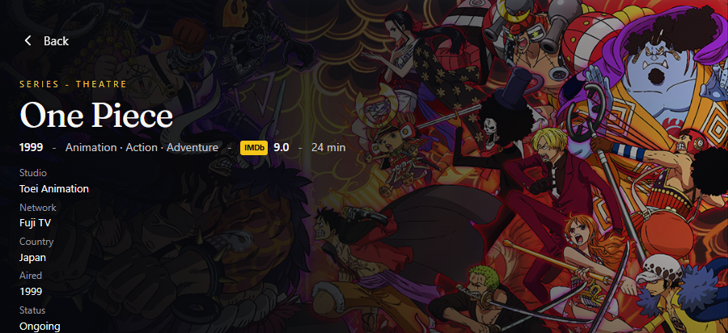
900×412 · 2026-10-31T22:48:27.457Z · SHA-256 4f2be5b22a8bf6c9bc3d3676594f6f788479e4da1e61218170544d8498b83b39
Capture metadata
series-original-landscapeFinished HTML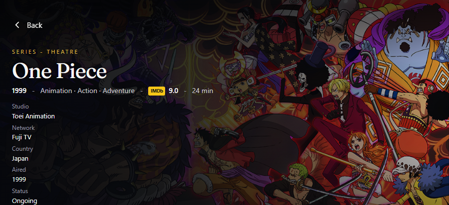
900×412 · 2026-10-31T23:54:57.298Z · SHA-256 fe104bd236b24e3fef75bffe53b864fdc7255b543de688da79d931c241b5d576
Capture metadata
series-finished-handoff-landscape 1280×700 desktop HTML comparison
Original worker HTML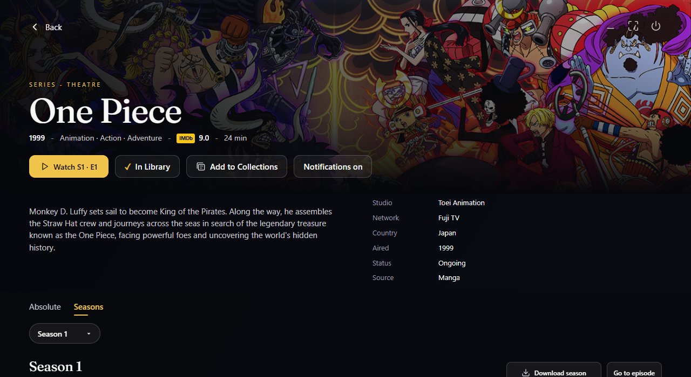
1280×700 · 2026-10-31T22:48:30.219Z · SHA-256 d97a48a2fb8e64c3a00b5a1777bc1ed85dd31b83e31034b98dcefd12dfec6ff5
Capture metadata
series-original-desktop-htmlFinished HTML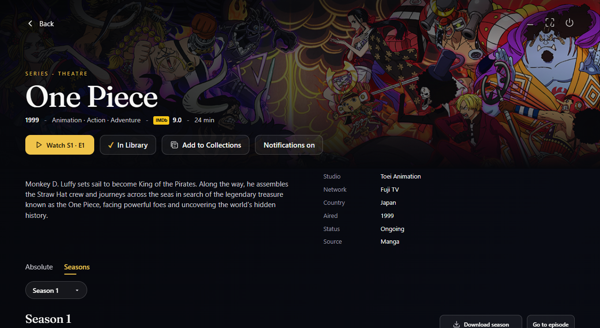
1280×700 · 2026-10-31T23:55:00.496Z · SHA-256 ed3715a1851c5fb614b8f88f1bb2c4952509d519aaf803e4f30e5bf4fd984a66
Capture metadata
series-finished-handoff-desktop-html 354×792 portrait
Original worker HTML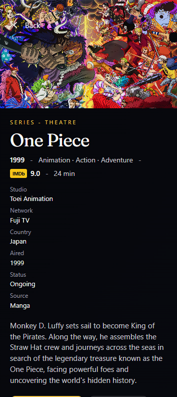
354×792 · 2026-10-31T22:48:26.263Z · SHA-256 e22e9e3af00be170dc16156e1ba4ead4d81196260ce78562a93eb0ee869bde4a
Capture metadata
series-original-portrait-smallFinished HTML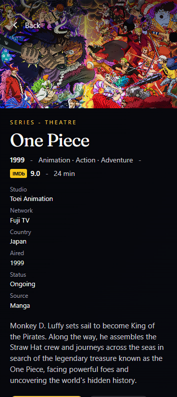
354×792 · 2026-10-31T23:54:55.702Z · SHA-256 f9c327fd0ef8308d8c8538d4e1bd6f95adac694c18a0201045c6798a8daf432a
Capture metadata
series-finished-handoff-portrait-small 792×354 landscape
Original worker HTML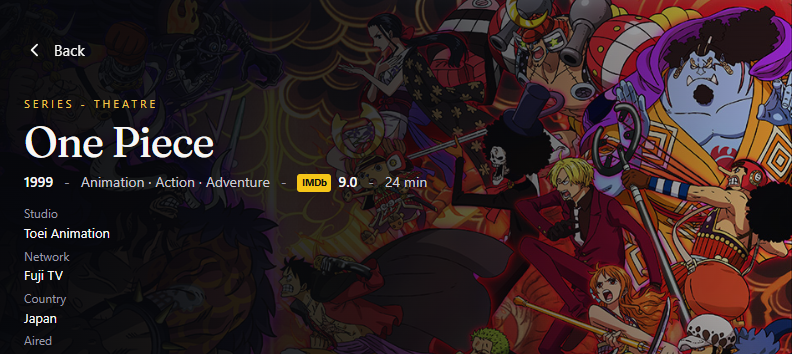
792×354 · 2026-10-31T22:48:28.809Z · SHA-256 00ef7b11d7ccb66d0faa43758a8f420bcd8eb5340922391cc1ea01b3ec61762c
Capture metadata
series-original-landscape-smallFinished HTML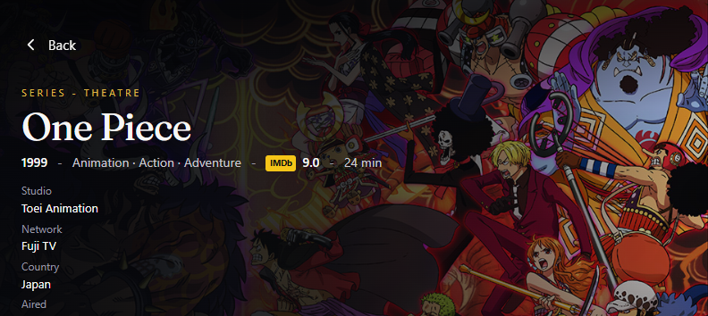
792×354 · 2026-10-31T23:54:58.825Z · SHA-256 6cecf502f1d43a0c2b7c479f1dbf0d700a09675ad4b1a6367980239b1ac94703
Capture metadata
series-finished-handoff-landscape-small Tablets — finished versions
800×1280 Android tablet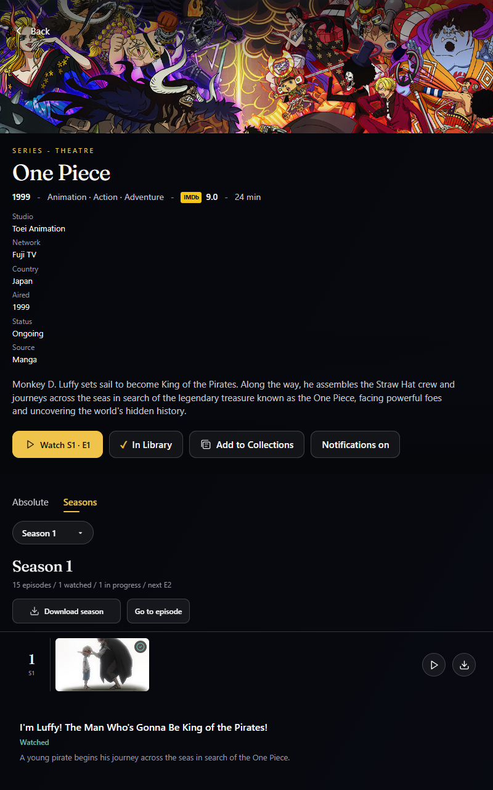
800×1280 · 2026-10-31T23:55:02.035Z · SHA-256 945a86f75d4acc0b88d29f5f614eed0fb6c74e57be8d3c9f9bc21e5cccad3e7b
Capture metadata
series-finished-handoff-tablet-portrait1280×800 Android tablet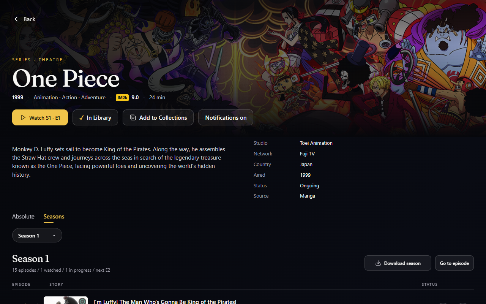
1280×800 · 2026-10-31T23:55:03.803Z · SHA-256 593ebba1223ddb7d34de255c69690b8cbc072231ed86f89b3538133e0dfda758
Capture metadata
series-finished-handoff-tablet-landscape Opt-in full synopsis at matched portrait stress
Original worker HTML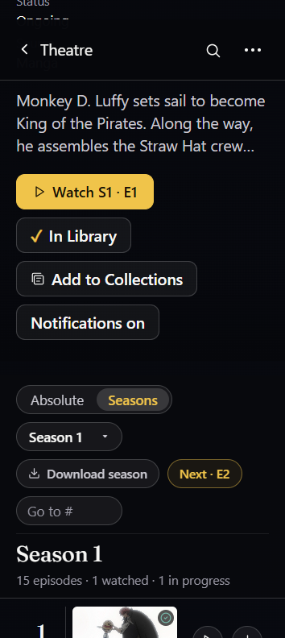
354×792 · 2026-11-01T00:07:03.024Z · SHA-256 78c9032ac481e3828a2f71a667dacbba6cee14b5b664d5d26a98f775c8f46bab
Capture metadata
series-original-synopsis-visible-portrait-small-stressFinished HTML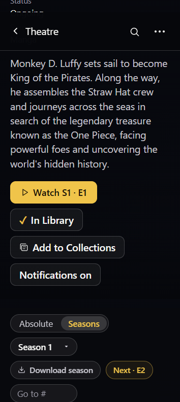
354×792 · 2026-11-01T00:07:04.231Z · SHA-256 23cae79d7cde97b9a54aea49ea2e223517202cfa85542332a93e73ab48caa494
Capture metadata
series-finished-synopsis-visible-portrait-small-stress Open season picker at landscape stress
Original worker HTML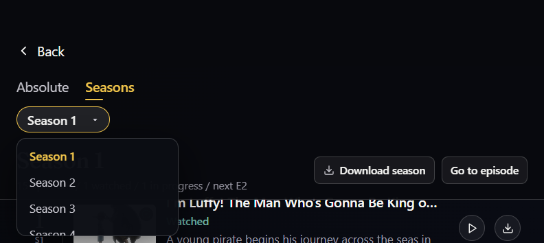
792×354 · 2026-10-31T22:48:32.734Z · SHA-256 567c23755f19192f002725690c7ec69a4b0e298f5ae5304a66a8d08e2fde424b
Capture metadata
series-original-season-landscape-stressFinished HTML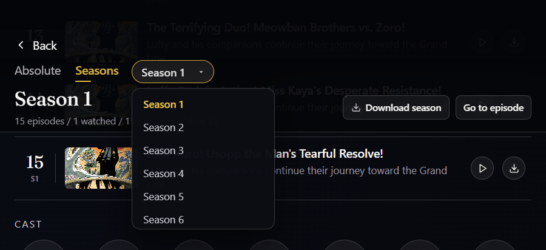
900×412 · 2026-10-31T23:43:50.066Z · SHA-256 edd279a16b8684dc3bfac02b3807e57afa5aa00af1af452a657fa58aa2f71587
Capture metadata
series-finished-verified-season-landscape-stress Go to the final episode — original failed target versus corrected target
Original worker HTML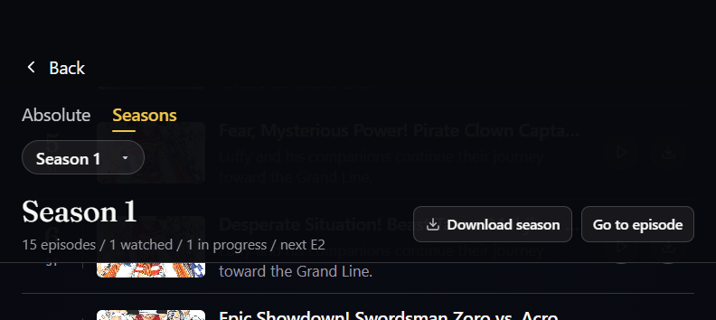
792×354 · 2026-10-31T22:57:11.180Z · SHA-256 278f4ccdf4026587d065071cfc00a31d077dbd185216c476ea5f936102574382
Capture metadata
series-original-jump-misses-last-episodeFinished HTML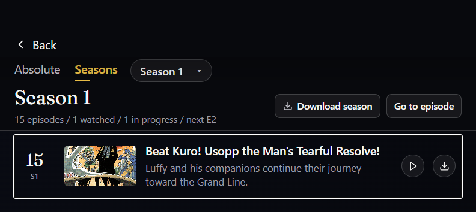
792×354 · 2026-10-31T23:43:52.222Z · SHA-256 0064eb8714d450cfb65c8750444618cae342e5498ed3df600b1472db42b9d102
Capture metadata
series-finished-verified-last-episode-landscape-small-stress Evidence ledgers